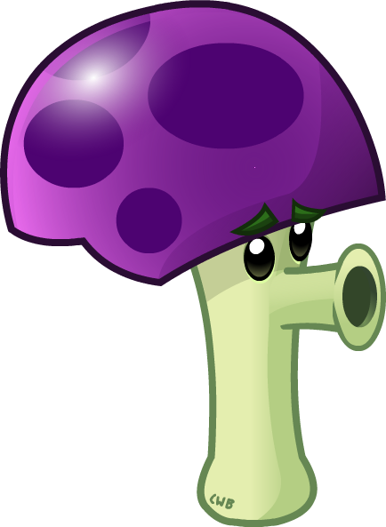
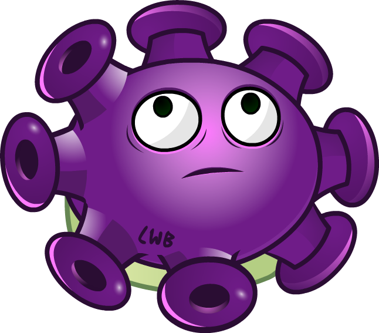

Plants
 Peashooter COST: 100 RECHARGE: (Fast) Peashooters are your first line of defense. They shoot peas at attacking zombies. DAMAGE: Normal. How can a single plant grow and shoot so many peas so quickly? Peashooter says, "Hard work, commitment, and a healthy, well-balanced breakfast of sunlight and high fiber carbon dioxide make it all possible." NOTES: He's a cute little bugger, isn't he?I love using these early on until I have a lot of sunflowers. Also note that all pea-firing plants have unlimited range, so the farther back they are, the better. |
Sunflower COST: 50 RECHARGE: (Fast) Sunflowers are essential for you to produce extra sun. try planting as many as you can Sun Production: Normal Notes: Sunflower can't resist bouncing to the beat. Which beat is that?Why, the life-giving jazzy rhythm of the Earth itself, thumping at a frequency only sunflower can hear. |
Cherry-bomb COST: 150 RECHARGE: (Very slow) Cherry Bombs can blow up all zombies in an area. They have a short fuse so plant them near zombies. DAMAGE: Massive RANGE: all zombies in a medium area USAGE: single use, instant NOTES: "I wanna explode," says Cherry #1. "No let's detonate instead!" says his brother, Cherry #2. After intense consultation they agree to explodonate. |
 Wall-Nut COST: 50 RECHARGE: (Slow) Wall-Nuts have hard shells which you can use to protect you other plants. TOUGHNESS: High NOTES: "People wonder how I feel about getting constantly chewed on by zombies," says Wall-nut. "What they don't realize is that with my limited senses all I can feel is a kind of tingling, like a relaxing back rub." |
Potato-mine COST: 25 RECHARGE: (Slow) Potato Mines pack a powerful punch, but they need a while to arm themselves. You should plant them ahead of zombies. They will explode on contact DAMAGE: Massive RANGE: all zombies in small area USAGE: single use, delayed activation NOTES: Some folks say Potato Mine is lazy, that he leaves everything to the last minute. Potato Mine says nothing. He's too busy thinking about his investment strategy. |
 Snow-Pea COST: 175 RECHARGE: (Fast) Snow Peas shoot frozen peas that damage and slow the enemy. DAMAGE: Normal, slows zombies NOTES: Folks often tell Snow Pea how "cool" he is, or exhort him to "chill out." They tell him to "stay frosty." Snow Pea just rolls hiseyes. He's heard 'em all. |
| Chomper COST: 150 RECHARGE: (Fast) Chompers can devour a zombie whole, but they are vulnerable while chewing. DAMAGE: massive RANGE: very short SPECIAL: long delay between chomps NOTES: Chomper almost got a gig doing stunts for The Little Shop of Horrors but it fell through when his agent demanded too much on the front end. Chomper's not resentful, though. He says it's just part of the business. |
 Repeater COST: 200 RECHARGE: (Fast) Repeater is fierce. He's from the streets. He doesn't take attitude from anybody, plant or zombie, and he shoots peas to keep people at a distance. Secretly, though, Repeater yearns for love. DAMAGE: normal (for each pea) FIRING SPEED: 2x NOTES: Repeaters fire two peas at a time |
Puff-Shroom COST: 0 RECHARGE: (Fast) Puff-shrooms are cheap, but can only fire a short distance and sleeps during the day. DAMAGE: normal RANGE: short NOTES: "I only recently became aware of the existence of zombies," says Puff-shroom. "Like many fungi, I'd just assumed they were fairy tales or movie monsters. This whole experience has been a huge eye-opener for me." |
 Sun-Shroom COST: 25 RECHARGE: (Fast) Sun-shrooms give small sun at first and normal sun later and sleeps during the day. Sun Production: low, then normal NOTES: Sun-shroom hates sun. He hates it so much that when it builds up in his system, he spits it out as fast as he can. He just won't abide it. To him, sun is crass |
Fume-Shroom COST: 75 RECHARGE: (Fast) Fume-shrooms shoot fumes that can pass through screen doors and sleeps during the day DAMAGE: normal, penetrates screen doors RANGE: all zombies in the fume cloud NOTES: "I was in a dead-end job producing yeast spores for a bakery," says Fume-shroom. "Then Puff-shroom, bless 'im, told me about this great opportunity blasting zombies. Now I really feel like I'm making a difference." |
 Grave Buster COST: 75 RECHARGE: (Fast) Plant Grave Busters on graves to remove the graves. USAGE: single use, must be planted on graves SPECIAL: remove graves NOTES: Despite Grave Buster's fearsome appearance, he wants everyone to know that he loves kittens and spends his off hours volunteering at a local zombie rehabilitation center. "It's just the right thing to do," he says. |
| Hypno-Shroom COST: 75 RECHARGE: (Slow) When eaten, Hypno-shrooms will make a zombie turn around and fight for you and sleeps during the day. USAGE: single use, on contact SPECIAL: makes a zombie fight for you NOTES: "Zombies are our friends," asserts Hypno-shroom. "They're badly misunderstood creatures who play a valuable role in our ecology. We can and should do more to bring them round to our way of thinking." |
 Scaredy-Shroom COST: 25 RECHARGE: (Fast) Scaredy-shrooms are long-ranged shooters that hide when enemies get near them and sleeps during the day. DAMAGE: normal SPECIAL: stops shooting when enemy is close NOTES: "Who's there?" whispers Scaredy-shroom, voice barely audible. "Go away. I don't want to see anybody. Unless it's the man from the circus." |
Ice-Shroom COST: 75 RECHARGE: (Very slow) Ice-shrooms temporarily immobilize all zombies on the screen and sleeps during the day. DAMAGE: very light, immobilizes zombies RANGE: all zombies on the screen USAGE: single use, instant NOTES: Ice-shroom frowns, not because he's unhappy or because he disapproves, but because of a childhood injury that left his facial nerves paralyzed. |
Doom-Shroom COST: 125 RECHARGE: (Very slow) Doom-shrooms destroy everything in a large area and leave a crater that can't be planted on and sleeps during the day. DAMAGE: massive RANGE: all zombies in a huge area USAGE: single use, instant SPECIAL: leaves a crater NOTES: "You're lucky I'm on your side," says Doom-shroom. "I could destroy everything you hold dear. It wouldn't be hard." |
 Lily Pad COST: 25 RECHARGE: (Fast) Lily Pads let you plant non-aquatic plants on top of them and must be planted in water. SPECIAL: non-aquatic plants can be planted on top of it NOTES: Lily Pad never complains. Lily Pad never wants to know what's going on. Put a plant on top of Lily Pad, he won't say a thing. Does he have startling opinions or shocking secrets? Nobody knows. Lily Pad keeps it all inside. |
Squash COST: 50 RECHARGE: (Slow) Squashes will smash the first zombie that gets close to it DAMAGE: massive RANGE: short range, hits all zombies that it lands on USAGE: single use NOTES: "I'm ready!" yells Squash. "Let's do it! Put me in! There's nobody better! I'm your guy! C'mon! Whaddya waiting for? I need this!" |
| Threepeater COST: 325 RECHARGE: (Fast) Threepeater shoot peas in three lanes. DAMAGE: normal (for each pea) RANGE: three lanes NOTES: Threepeater likes reading, backgammon and long periods of immobility in the park. Threepeater enjoys going to shows, particularly modern jazz. "I'm just looking for that special someone," he says. Threepeater's favorite number is 5. |
 Tangle Kelp COST: 25 RECHARGE: (Slow) Tangle Kelp are aquatic plants that pull the first zombie that nears them underwater and must be planted in water. DAMAGE: massive USAGE: single use, on contact NOTES: "I'm totally invisible," Tangle Kelp thinks to himself. "I'll hide here just below the surface and nobody will see me." His friends tell him they can see him perfectly well, but he'll never change. |
Jalapeno COST: 125 RECHARGE: (Very slow) Jalapenos destroy an entire lane of zombies DAMAGE: massive RANGE: all zombies in lane USAGE: single use, instant NOTES: "NNNNNGGGGG!!!!!!!!" Jalapeno says. He's not going to explode, not this time. But soon. Oh, so soon. It's close. He knows it, he can feel it, his whole life's been leading up to this moment. |
 Spikeweed COST: 100 RECHARGE: (Fast) Spikeweeds pop tires and hurt any zombies that step on them. DAMAGE: normal RANGE: all zombies that over it SPECIAL: can't be eaten by zombies NOTES: Hockey is Spikeweed's obsession. He's got box seat season tickets. He keeps close track of his favorite players. And he consistently cleans up in the officehockey pool. Just one problem: he's terrified of pucks. |
Torchwood COST: 175 RECHARGE: (Fast) Torchwoods turn peas that pass through them into fireballs that deals twice as much damage. SPECIAL: doubles the damage of peas that pass through it. Fireballs deal damage to nearby zombies on impact NOTES: Everybody likes and respects Torchwood. They like him for his integrity, for his steadfast friendship, for his ability to greatly maximize pea damage. But Torchwood has a secret: he can't read. |
 Tall-nut COST: 125 RECHARGE: (Slow) Tall-nuts are heavy-duty wall plants that can't be vaulted or jumped over. TOUGHNESS: very high SPECIAL: can't be vaulted or jumped over NOTES: People wonder if there's a rivalry between Wall-nut and Tall-nut. Tall-nut laughs a rich baritone laugh. "How could there be anything between us? We are brothers. If you knew what Wall-nut has done for me..."Tall-nut's voice trails off and he smiles knowingly. |
| Sea-Shroom COST: 0 RECHARGE: (Slow) Sea-shrooms are aquatic plants that shoot short ranged spores, must be planted in water and sleeps during the day. DAMAGE: Normal RANGE: short NOTES: Sea-shroom has never seen the sea. It's in his name, he's heard loads about it, but he's just never found the time. One day, though, it'll go down. |
Plantern COST: 25 RECHARGE: (Slow) Planterns light up an area, letting you see through fog. RANGE: one lane SPECIAL: lets you see through fog NOTES: Plantern defies science. He just does. Other plants eat light and excrete oxygen; Plantern eats darkness and excretes light. Plantern's cagey about how he does it. "I'm not gonna say 'sorcery,' I wouldn't use the term 'dark forces,' I just... I think I've said enough." |
Cactus COST: 125 RECHARGE: (Fast) Cactuses shoot spikes that can hit both ground and air targets. DAMAGE: Normal RANGE: ground and air NOTES: She's prickly, sure, but Cactus's spikes belie a spongy heart filled with love and goodwill. She just wants to hug and be hugged. Most folks can't hang with that, but Cactus doesn't mind. She's been seeing an armadillo for a while and it really seems to be working out. |
Blover COST: 100 RECHARGE: (Fast) Blovers blow away all balloon zombies and fog. USAGE: single use, instant SPECIAL: blows away all balloon zombies NOTES: When Blover was five he got a shiny new birthday cake. Blover made his wish, huffed and puffed, but was able to extinguish only 60% of the candles. Instead of giving up, though, he's used that early defeat as a catalyst to push himself harder ever since. |
Split Pea COST: 125 RECHARGE: (Fast) Split Pea shoot peas forward and backwards. DAMAGE: Normal RANGE: forward and backwards Firing Speed: 1x forward, 2x backwards NOTES: "Yeah, I'm a Gemini," says Split Pea. "I know, big surprise. But having two heads --or really, one head with a large head-like growth on the back-- pays off big in my line of work." |
Starfruit COST: 125 RECHARGE: (Fast) Star-fruits shoot stars in five directions. DAMAGE: Normal RANGE: five directions NOTES: "Aw, man," says Starfruit. "I went to the dentist the other day and he said I have four cavities. I've got --count it-- ONE tooth! Four cavities in one tooth? How does this happen?" |
| Pumpkin COST: 125 RECHARGE: (Slow) Pumpkins protect plants that are within their shells. TOUGHNESS: high SPECIAL: can be planted over another plant NOTES: Pumpkin hasn't heard from his cousin Renfield lately. Apparently Renfield's a big star, some kind of... what was it... sports hero? Peggle Master? Pumpkin doesn't really get it. He just does his job. |
 Magnet-Shroom COST: 100 RECHARGE: (Fast) Magnet-shrooms remove helmets and other metal objects from zombies and sleeps during the day. RANGE: nearby zombies SPECIAL: removes helmets and other metal objects from zombies NOTES: Magnetism is a powerful force. Very powerful. Sometimes it scares Magnet-shroom a little. He's not sure if he can handle that kind of responsibility. |
Cabbage-Pult COST: 100 RECHARGE: (Fast) Cabbage-pults hurl cabbages at the enemy DAMAGE: Normal RANGE: lobbed NOTES: Cabbage-pult is okay with launching cabbages at zombies. It's what he's paid for, after all, and he's good at it. He just doesn't understand how the zombies get up on the roof in the first place. |
Flower Pot COST: 25 RECHARGE: (Fast) Flower Pots let you plant on the roof. SPECIAL: allows you to plant on the roof NOTES: "I'm a pot for planting. Yet I'm also a plant. HAS YOUR MIND EXPLODED YET?" |
Kernel-Pult COST: 100 RECHARGE: (Fast) Kernel-Pults fling corn kernels and butter at zombies DAMAGE: light(kernel) RANGE: lobbed SPECIAL: butter immobilizes zombies NOTES: Kernel-pult is the eldest of the Pult brothers. Of the three of them, Kernel is the only one who consistently remembers the others' birthdays. He bugs them about it a little, too. |
 Coffee-Bean COST: 75 RECHARGE: (Fast) Use Coffee Beans to wake up sleeping mushrooms. USAGE: single use, instant SPECIAL: can be planted over another plant, wakes up mushrooms NOTES: "Hey, guys, hey!" says Coffee Bean. "Hey! What's up? Who's that? Hey! Didja see that thing? What thing? Whoa! Lions!" Yep, Coffee Bean sure does get excited |
| Garlic COST: 50 RECHARGE: (Fast) Garlic diverts zombies into other lanes. USAGE: on contact SPECIAL: diverts zombies into other lanes NOTES: Lane-diversion isn't just Garlic's profession. It's his passion. He carries an advanced Doctorate in Redirection from the Brussels University. He'll talk all day about lane vectors and repulse arrays. He even pushes things into alternate avenues at home. Somehow his wife puts up with it. |
 Umbrella Leaf COST: 100 RECHARGE: (Fast) Umbrella Leaves protect nearby plants from bungees and catapults. SPECIAL: protects adjacent plants from bungees and catapults NOTES: "SPROING!" says Umbrella Leaf. "Didja like that? I can do it again. SPROING! Woo! That's me popping up to protect stuff around me. Yeah. Just like that. EXACTLY like that. Believe it." |
Marigold COST: 50 RECHARGE: (Slow) Marigolds give you silver and gold coins. SPECIAL: gives coins NOTES: Marigold spends a lot of time deciding whether to spit out a silver coin or a gold one. She thinks about it, weighs the angles. She does solid research and keeps up with current publications. That's how winners stay ahead. |
Melon-Pult COST: 300 RECHARGE: (Fast) Melon-Pults do heavy damage to groups of zombies. DAMAGE: heavy RANGE: lobbed SPECIAL: melons damages nearby enemies on impact FIRING SPEED: 1/2x NOTES: There's no false modesty with Melon-pult. "Sun-for-damage, I deliver the biggest punch on the lawn," he says. "I'm not bragging. Run the numbers. You'll see." |
Gatling-Pea COST: 250 RECHARGE: (Very slow) Gatling Peas shoot four peas at a time and must be planted on existing Repeaters. DAMAGE: Normal (for each pea) FIRING SPEED: 4x NOTES: Gatling Pea's parents were concerned when he announced his intention to join the military. "But honey, it's so dangerous!" they said in unison. Gatling Pea refused to budge. "Life is dangerous,"he replied, eyes glinting with steely conviction. |
 Twin Sunflower COST: 150 RECHARGE: (Very slow) Twin Sunflowers give twice as much as a normal sunflower and must be planted on existing sunflowers SUN PRODUCTION: double NOTES: It was a crazed night of forbidden science that brought Twin Sunflower into existence. Thunder crashed overhead, strange lights flickered, even the very roaring wind seemed to hiss its angry denial. But to no avail. Twin Sunflower was alive, ALIVE! |
|  Gloom-Shroom COST: 150 RECHARGE: (Very slow) Gloom-Shrooms release heavy fumes in an area around themselves and must be planted on existing fume-shrooms. NOTES: "I've always enjoyed releasing heavy fumes," says Gloom Shroom. "I know a lot of people aren't cool with that. They say it's rude or that it smells bad. All I can say is, would you rather have your brain eaten by zombies?" |
Cattail COST: 225 RECHARGE: (Very slow) Cattails can attack at any lane and shoot down balloon zombies too and must be planted on lily pads. NOTES: "Woof!" says Cattail. "Woof woof woof! Does this confuse you? Do you expect me to say 'Meow' like a cat because the word 'cat' is in my name and I also look like a cat? That's not how things work around here. I refuse to be pigeonholed." |
Winter Melon COST: 200 RECHARGE: (Very slow) Winter Melons do heavy damage and slow groups of zombies and must be planted on existing Melon-Pults. DAMAGE: Very heavy RANGE: lobbed FIRING SPEED: 1/2x SPECIAL: Melons damage and freeze nearby enemies on impact NOTES: Winter Melon tries to calm his nerves. He hears the zombies approach. Will he make it? Will anyone make it? |
 Gold Magnet COST 50 RECHARGE: (Very slow) Gold Magnets collect coins and diamonds for you and must be planted on Magnet-shrooms. NOTES: "How did I end up here?" asks Gold Magnet. "I was on the fast track --corner office, full benefits, stock options. I was gonna be Vice President of Midwestern Operations. Now I'm here, on this lawn, in serious danger of being eaten to death. Ooh! A coin!" |
Spikerock COST: 125 RECHARGE: (Very slow) Spikerocks pop multiple tires and damage zombies that walk over it and must be planted on Spikeweeds. NOTES: Spikerock just got back from a trip to Europe. He had a great time, met some wonderful people, really broadened his horizons. He never knew they made museums so big, or put so many paintings in them. That was a big surprise for him. |
 Cab Cannon COST: 500 RECHARGE: (Very slow) Click on the Cob Cannon to launch deadly cobs of corn and must be planted on 2 side by side Kernel-Pults. NOTES: What's the deal with Cob Cannon, anyway? He went to Harvard. He practices law in a prestigious New York firm. He can explode whole areas of zombies with a single corn launch. All this is common knowledge. But deep inside, what really makes him tick? |